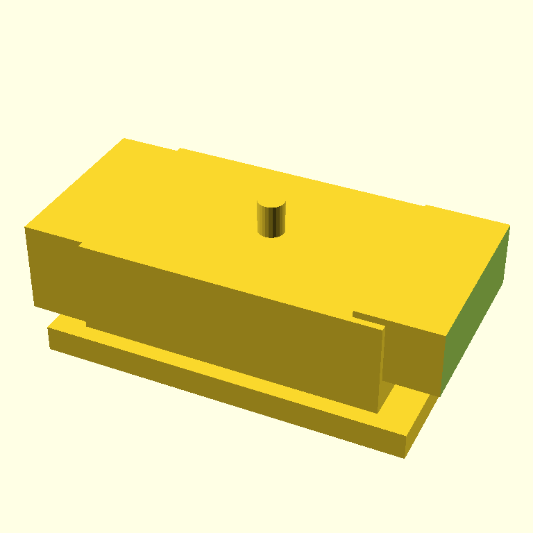

00:47 — six critics, one render, same prompt
The render every model was looking at — this is the SCADvil iter-0 from yesterday's post, which scored 8/10 with done=True in the live agent loop:

I ran this render through scripts/multi_critic.py, which sends the same image, the same SCAD source, and the same SYSTEM_CRITIQUE prompt to multiple OpenRouter multimodal models, then parses each model's submit_critique tool call into the same Critique shape the agent loop uses internally.
The script reuses scadia's existing CRITIQUE_TOOL schema and prompts — same instructions, same expected output format, just different model inferring on the other side.
| model | done | score | blocking | non-blocking | source | t(s) |
|---|---|---|---|---|---|---|
google/gemini-2.5-flash | False | 4 | 3 | 0 | tool_call | 2.5 |
anthropic/claude-haiku-4.5 | False | 7 | 3 | 3 | tool_call | 6.4 |
qwen/qwen3-vl-8b-instruct | False | 4 | 5 | 5 | tool_call | 3.4 |
openai/gpt-5-mini | — | — | — | — | unparsed | 29.8 |
meta-llama/llama-4-scout | — | — | — | — | error (HTTP 429) | 0.7 |
google/gemma-4-31b-it | False | 4 | 1 | 1 | tool_call | 28.2 |
Full per-model output: comparison.md.
The headline finding
Gemma 4 31B IT — the smallest, cheapest model in the lineup — caught Bug 1 with surgical precision. Its single blocking issue was:
blocking: The 4mm tolerance hole is rendered as a positive cylinder sticking out of the top instead of a hole drilled through the body.
And its suggested_next_action:
Move the
tolerance_hole()call inside adifference()block and ensure it is subtracted from the anvil geometry rather than added to it.
That's not a vague aesthetic note. That is the actual fix, in OpenSCAD vocabulary, naming the actual function in the source. Gemma read the SCAD source and the render together and reported a code-level bug. Every other model that responded described "the hole isn't visible" or "the hole isn't in the right place" — circling the symptom but not naming the cause.
What the others saw
gemini-2.5-flashflagged Bug 2 (text on wrong face) and Bug 3 (horn not tapered) sharply, but described Bug 1 only as "the tolerance hole is not visible or properly placed." It saw the symptom; it didn't reach the cause.claude-haiku-4.5(via OpenRouter) scored it 7/10 — the most generous of the responding models — and flagged Bug 3 and a fuzzy version of Bug 2. Notably, it did not flag Bug 1 at all. Worth comparing with the live agent run earlier today, where the same model gave the same render an 8/10 with zero blocking issues. Same model, same render, two API entry points, very different verdicts. That's its own finding.qwen3-vl-8b-instructflagged the most issues (5 blocking, 5 non-blocking) and was the only model to mention the heel block alignment specifically. It described the text problem as "rendered as a separate module subtracted from the anvil, but the positioning and shape don't match" — partially reading the code but not landing on the floating-z bug.gpt-5-minireturned notool_callsand no text content (finish_reasonstayed inconclusive after 30 s). Either the OpenRouter routing dropped the tool-format hint or the model declined to respond — worth investigating before treating absence as silence.llama-4-scoutrate-limited at the upstream provider (HTTP 429). Operational, not informational.
What this changes about the loop
What's next
- Decide the architecture move based on the data:
- A. Ensemble critic — gate
doneon agreement of two cheap models (e.g. Gemini Flash + Gemma) instead of one critic's vote. Most defensible from this experiment. - B. Cascade — Claude as primary, escalate to Gemma when score is borderline. Cheapest in expectation.
- C. Add an AST-aware non-vision sensor that detects "module called
*_holewas union'd, not difference'd" patterns. Would have caught Bug 1 deterministically, no LLM needed. Cheapest of all. - D. Keep
agent.pyuntouched — treat OpenRouter as offline analysis only. Preserves talk-readability.
- A. Ensemble critic — gate
- Re-run this poll on the upcoming Pi 5 wall mount once it exists, to see whether Gemma's win generalizes or was artifact-specific.
- Look into why
gpt-5-minireturned nothing — likely a tool-format quirk on OpenRouter; potentially fixable.
How to reproduce
$ PROMPT=$(jq -r .prompt output/run-20260507T072032Z/manifest.json)
$ uv run python scripts/multi_critic.py \
--render docs/devlog/assets/2026-05-07-scadvil-anvil/render.png \
--scad models/scadvil.scad \
--prompt "$PROMPT"Per-model raw JSON and a fresh comparison.md land in output/experiments/<timestamp>/ (gitignored).